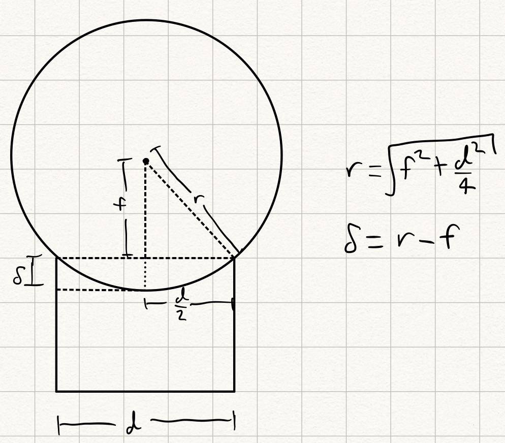

<topbar style="display:none;">
<item><a href="../index.html">Home</a></item>
<item><a href="../about.html">About</a></item>
</topbar>
<!-- This is a comment, it is ignored by the compiler/interpreter -->
# Week 6
<div></div>
## Overview
<div></div>
This week we focused on the first prototypes of our reflector approach to light collection.
### First Prototype
We began by prototyping the spherical mirror made by vacuum. We started with a pot-shaped vacuum chamber with a roughly 10" diameter. Tape was placed around the rim and then a membrane was carefully laid across the opening to form a seal. Because we did not yet have mylar, we used aluminium foil. Drawing vacuum with a hand pump deflected the aluminium foil, but we discovered that the material really needs to be elastic.
The prototype gave us a few valuable points of data. Firstly, the material needs to be quite elastic to avoid radial folds developing due to the differential stretching at the edges vs center. This should be less of a problem with mylar than aluminium, but may become a problem later if we try making rigid forms to put mylar on that don't require vacuum. Secondly, we were only able to achieve a deflection of about 1cm, for a focal length of nearly 4 feet. Shown below is a diagram relating the deflection distance and the focal point of a spherical lens; even for a 1m diameter dish, we need a deflection of 6 inches to achieve a focal point at 3 feet.

### Second Prototype
When the mylar arrived, we were able to make a prototype of the vacuum type reflector. A bit surprisingly, the mylar had just as much of an issue with the radial folds as the aluminium foil, despite being significantly more pliable.